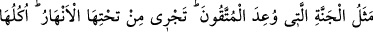
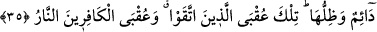

Çukurum iyice derinleşti, sıcaklığım arttı. Vaad ettiğin varlıkları bana getir.”
Bunun üzerine Allah Teâlâ: “Bütün erkek ve kadın müşrikler, bütün erkek ve kadın
habisler ve hesap gününe inanmayan tüm zorbalar senindir.” buyurunca cehennem:
“Tamam râzıyım.” dedi. Nitekim et-Terğîb ve’t-terhîb’de böyle geçmektedir.[146]
İbn Mersed’in gözlerinin yaşı hiç eksik olmaz, devamlı ağlardı. Bunun sebebi
sorulunca şöyle cevap verirdi: “Şâyet Allah, günah işlediğim takdirde beni ebediyyen
bir hamama hapsetmekle tehdit etmiş olsaydı bu bile gözyaşlarımın hiç dinmemesi için
yeterli bir sebep olurdu. Oysa O, beni tam üç bin sene tutuşturduğu bir ateşe
hapsetmekle tehdit ediyor. Öyle ki bu ateş bin sene yakılınca kıpkızıl kesilmiş, bin sene
daha yakılınca bembeyaz kesilmiş, bin sene daha yakılınca simsiyah kesilmiştir. Şimdi
karanlık bir gece gibi simsiyah ve kapkaranlıktır.”
Küçük ateşle azâba duçar edilenin hali böyledir. Büyük azâba, yâni Allah’tan mahrum
ve uzak olma azâbına dûçar olanın durumu ise çok daha sıkıntılı ve korkunçtur. Câmî
der ki:
Hakk’ı görmeyince yanağımda cehennemden bir kapı olur
Cennetin hâzini, kapıcısı kabrime pencere açsa bile
Allah Teâlâ’dan bizi korumasını, hak ve tahkik yoluna muvaffak kılmasını niyaz
ederiz.
35. Takvâ sahiplerine vadedilen cennetin özelliği (şudur): Onun zemininden
ırmaklar akar. Yemişleri ve gölgesi süreklidir. İşte bu, takvâ sâhiplerinin sonudur.
Kâfirlerin sonu ise ateştir.
“Takvâ sahiplerine” şirk koşmaktan ve mâsıyetlerden sakınanlara “vaadedilen
cennetin özelliği (şudur):”
Bu cümlenin haberi hazfedilmiştir: ‘Yâni sana anlattıklarımız arasında cennetin
özelliği de vardır. Yani hayret verici olma konusunda mesel olabilecek özelliği de
vardır.’
“Onun zemininden ırmaklar akar.” Ağaçlarının altından dört mertebeye, yâni şerîat,
tarîkat, mârifet ve hakîkat mertebelerine karşılık dört nehir akar. Bunlar takvâ
sâhiplerine vâdedilmiştir. Bu nehirler tam olarak sadece bu dört mertebeyi kendisinde
toplayan kimselere, yani mukarreblere verilir. Bunların dışındaki ebrâra (iyiler) ve